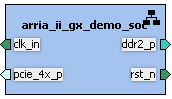
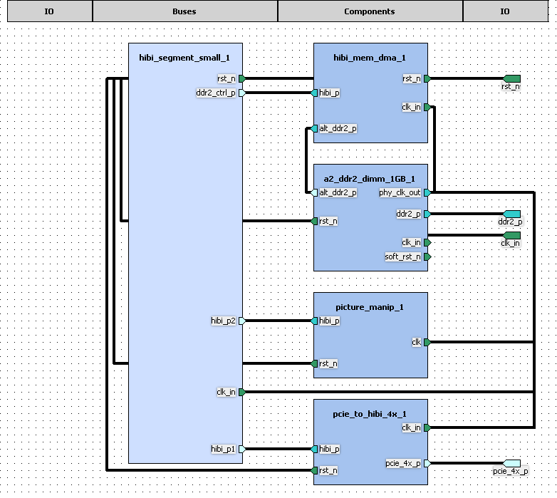
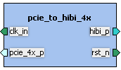
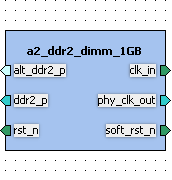
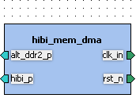
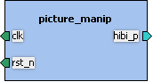
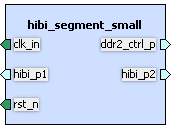

Table of contents
1. Component TUT - soc - arria_ii_gx_demo_soc - 1.0
1.1. Kactus2 attributes
1.2. Ports
1.3. Bus interfaces
1.4. Views
2. Component TUT - ip.hwp.interface - pcie_to_hibi_4x - 1.0
2.1. Model parameters
2.2. Kactus2 attributes
2.3. Ports
2.4. Bus interfaces
2.5. File sets
2.6. Views
3. Component TUT - ip.hwp.storage - a2_ddr2_dimm_1GB - 2.0
3.1. Kactus2 attributes
3.2. Ports
3.3. Bus interfaces
3.4. File sets
3.5. Views
4. Component TUT - ip.hwp.storage - hibi_mem_dma - 2.0
4.1. Kactus2 attributes
4.2. Ports
4.3. Bus interfaces
4.4. File sets
4.5. Views
5. Component TUT - ip.hwp.accelerator - picture_manip - 1.0
5.1. Kactus2 attributes
5.2. Ports
5.3. Bus interfaces
5.4. File sets
5.5. Views
6. Component TUT - ip.hwp.communication - hibi_segment_small - 2.0
6.1. Kactus2 attributes
6.2. Ports
6.3. Bus interfaces
6.4. File sets
6.5. Views

IP-Xact file: arria_ii_gx_demo_soc.1.0.xml
Product hierarchy: SoC
Component implementation: HW
Component firmness: Mutable
| Name | Direction | Width | Left bound | Right bound | Default value |
|---|---|---|---|---|---|
| clkin_bot_p | in | 1 | 0 | 0 | |
| ddr2_dimm_addr | out | 16 | 15 | 0 | |
| ddr2_dimm_ba | out | 3 | 2 | 0 | |
| ddr2_dimm_cas_n | out | 1 | 0 | 0 | |
| ddr2_dimm_cke | out | 1 | 0 | 0 | |
| ddr2_dimm_clk | inout | 2 | 1 | 0 | |
| ddr2_dimm_clk_n | inout | 2 | 1 | 0 | |
| ddr2_dimm_cs_n | out | 1 | 0 | 0 | |
| ddr2_dimm_dm | out | 8 | 7 | 0 | |
| ddr2_dimm_dq | inout | 64 | 63 | 0 | |
| ddr2_dimm_dqs | inout | 8 | 7 | 0 | |
| ddr2_dimm_dqs_n | inout | 8 | 7 | 0 | |
| ddr2_dimm_odt | out | 1 | 0 | 0 | |
| ddr2_dimm_ras_n | out | 1 | 0 | 0 | |
| ddr2_dimm_we_n | out | 1 | 0 | 0 | |
| pcie_refclk_p | in | 1 | 0 | 0 | |
| pcie_rx_p | in | 4 | 3 | 0 | |
| pcie_tx_p | out | 4 | 3 | 0 | |
| rst_n_RESETn | in | 1 | 0 | 0 | |
| user_pb | in | 3 | 2 | 0 |
Description: Clock input for demo design
Interface mode: slave
Ports used in this interface:
Description: DDR2 interface to DDR2 memory
Interface mode: master
Ports used in this interface:
Description: PCIe 4x interface
Interface mode: mirroredMaster
Ports used in this interface:
Interface mode: slave
Ports used in this interface:

Type: hierarchical
IP-Xact file: arria_ii_gx_demo_soc.designcfg.1.0.xml
IP-Xact file: arria_ii_gx_demo_soc.design.1.0.xml
| Instance name | Component type | Configurable values | Active view | Description |
|---|---|---|---|---|
| pcie_to_hibi_4x_1 | TUT - ip.hwp.interface - pcie_to_hibi_4x - 1.0 | rtl | ||
| a2_ddr2_dimm_1GB_1 | TUT - ip.hwp.storage - a2_ddr2_dimm_1GB - 2.0 | rtl | ||
| hibi_mem_dma_1 | TUT - ip.hwp.storage - hibi_mem_dma - 2.0 | rtl | ||
| picture_manip_1 | TUT - ip.hwp.accelerator - picture_manip - 1.0 | rtl | ||
| hibi_segment_small_1 | TUT - ip.hwp.communication - hibi_segment_small - 2.0 | rtl |
Type: non-hierarchical

Description: Adapter to connect HIBI based FPGA subsystem to PCIe bus.
IP-Xact file: pcie_to_hibi_4x.1.0.xml
| Name | Data type | Default value |
|---|---|---|
| HIBI_DATA_WIDTH | integer | 32 |
Product hierarchy: IP
Component implementation: HW
Component firmness: Parameterizable
| Name | Direction | Width | Left bound | Right bound | Default value |
|---|---|---|---|---|---|
| clk_in | in | 1 | 0 | 0 | |
| hibi_av_in | in | 1 | 0 | 0 | |
| hibi_av_out | out | 1 | 0 | 0 | |
| hibi_comm_in | in | 5 | 4 | 0 | |
| hibi_comm_out | out | 5 | 4 | 0 | |
| hibi_data_in | in | 32 | 31 | 0 | |
| hibi_data_out | out | 32 | 31 | 0 | |
| hibi_empty_in | in | 1 | 0 | 0 | |
| hibi_full_in | in | 1 | 0 | 0 | |
| hibi_one_d_in | in | 1 | 0 | 0 | |
| hibi_one_p_in | in | 1 | 0 | 0 | |
| hibi_re_out | out | 1 | 0 | 0 | |
| hibi_we_out | out | 1 | 0 | 0 | |
| pcie_ref_clk | in | 1 | 0 | 0 | |
| pcie_rst_n | in | 1 | 0 | 0 | |
| pcie_rx | in | 4 | 3 | 0 | |
| pcie_tx | out | 4 | 3 | 0 | |
| rst_n | in | 1 | 0 | 0 |
Interface mode: slave
Ports used in this interface:
Interface mode: master
Ports used in this interface:
Interface mode: mirroredMaster
Ports used in this interface:
Interface mode: slave
Ports used in this interface:
Identifiers:
Default file builders:
| File type | Command | Flags | Replace default flags |
|---|---|---|---|
| verilogSource | vlog | -quiet -work pcie_to_hibi_4x | false |
| vhdlSource | vcom | -quiet -check_synthesis -work pcie_to_hibi_4x | false |
| File name | Logical name | Build command | Build flags | Specified file types | Description |
|---|---|---|---|---|---|
| pcie_to_hibi_4x.vhd | pcie_to_hibi_4x | vhdlSource | |||
| pcie_to_hibi_4x_sopc.vhd | pcie_to_hibi_4x | vhdlSource | |||
| pcie_to_hibi_4x_sopc_burst_0.vhd | pcie_to_hibi_4x | vhdlSource | |||
| pcie_to_hibi_4x_sopc_burst_1.vhd | pcie_to_hibi_4x | vhdlSource | |||
| pcie_to_hibi_4x_sopc_burst_2.vhd | pcie_to_hibi_4x | vhdlSource | |||
| pcie_to_hibi_4x_sopc_burst_3.vhd | pcie_to_hibi_4x | vhdlSource | |||
| pcie_to_hibi_4x_sopc_burst_4.vhd | pcie_to_hibi_4x | vhdlSource | |||
| pcie_to_hibi_4x_sopc_burst_5.vhd | pcie_to_hibi_4x | vhdlSource | |||
| pcie.vhd | pcie_to_hibi_4x | vhdlSource | |||
| dma.vhd | pcie_to_hibi_4x | vhdlSource | |||
| pcie_core.vhd | pcie_to_hibi_4x | vhdlSource | |||
| pcie_serdes.vhd | pcie_to_hibi_4x | vhdlSource | |||
| a2h.v | pcie_to_hibi_4x | verilogSource | |||
| altpcie_64b_x4_pipen1b.v | pcie_to_hibi_4x | verilogSource | |||
| altpcie_hip_pipen1b.v | pcie_to_hibi_4x | verilogSource | |||
| altpcie_pclk_align.v | pcie_to_hibi_4x | verilogSource | |||
| altpcie_pclk_pll.v | pcie_to_hibi_4x | verilogSource | |||
| altpcie_phasefifo.v | pcie_to_hibi_4x | verilogSource | |||
| altpcie_pll_100_125.v | pcie_to_hibi_4x | verilogSource | |||
| altpcie_pll_100_250.v | pcie_to_hibi_4x | verilogSource | |||
| altpcie_pll_125_250.v | pcie_to_hibi_4x | verilogSource | |||
| altpcie_pll_15625_125.v | pcie_to_hibi_4x | verilogSource | |||
| altpcie_pll_250_100.v | pcie_to_hibi_4x | verilogSource | |||
| altpcie_pll_phy0.v | pcie_to_hibi_4x | verilogSource | |||
| altpcie_pll_phy1_62p5.v | pcie_to_hibi_4x | verilogSource | |||
| altpcie_pll_phy2.v | pcie_to_hibi_4x | verilogSource | |||
| altpcie_pll_phy3_62p5.v | pcie_to_hibi_4x | verilogSource | |||
| altpcie_pll_phy4_62p5.v | pcie_to_hibi_4x | verilogSource | |||
| altpcie_pll_phy5_62p5.v | pcie_to_hibi_4x | verilogSource | |||
| altpcie_serdes_2agx_x4d_gen1_08p.v | pcie_to_hibi_4x | verilogSource | |||
| altpcie_serdes_2agx_x4d_gen1_16p.v | pcie_to_hibi_4x | verilogSource | |||
| pciexp64_dlink.v | pcie_to_hibi_4x | verilogSource | |||
| pciexp64_trans.v | pcie_to_hibi_4x | verilogSource | |||
| pciexp_dcram.v | pcie_to_hibi_4x | verilogSource | |||
| pciexpx8f_confctrl.v | pcie_to_hibi_4x | verilogSource | |||
| avalon_to_hibi.v | pcie_to_hibi_4x | verilogSource |
Description: pcie_to_hibi IP documentations.
Identifiers:
| File name | Logical name | Build command | Build flags | Specified file types | Description |
|---|---|---|---|---|---|
| PCI-E_to_hibi.docx | documentation | pcie_to_hibi IP block documentation in word document. | |||
| PCI-E_to_hibi.pptx | documentation | pcie_to_hibi IP block documentation in powerpoint presentation. |
Identifiers:
| File name | Logical name | Build command | Build flags | Specified file types | Description |
|---|---|---|---|---|---|
| pcie.sdc | quartusSDCFile | pcie_to_hibi timing and area constraints. |
Identifiers:
| File name | Logical name | Build command | Build flags | Specified file types | Description |
|---|---|---|---|---|---|
| pcie_to_hibi_4x_sopc.sopc | quartusSOPCFILE | SOPC project file |
Type: non-hierarchical
File sets contained in this view:

Description: Altera ddr2 memory controller
IP-Xact file: alt_ddr2_a2.comp.1.0.xml
Product hierarchy: IP
Component implementation: HW
Component firmness: Mutable
| Name | Direction | Width | Left bound | Right bound | Default value |
|---|---|---|---|---|---|
| aux_full_rate_clk | out | 1 | 0 | 0 | |
| aux_half_rate_clk | out | 1 | 0 | 0 | |
| dll_reference_clk | out | 1 | 0 | 0 | |
| dqs_delay_ctrl_export | out | 6 | 5 | 0 | |
| global_reset_n | in | 1 | 0 | 0 | |
| local_address | in | 25 | 24 | 0 | |
| local_be | in | 32 | 31 | 0 | |
| local_burstbegin | in | 1 | 0 | 0 | |
| local_init_done | out | 1 | 0 | 0 | |
| local_rdata | out | 256 | 255 | 0 | |
| local_rdata_valid | out | 1 | 0 | 0 | |
| local_read_req | in | 1 | 0 | 0 | |
| local_ready | out | 1 | 0 | 0 | |
| local_refresh_ack | out | 1 | 0 | 0 | |
| local_size | in | 3 | 2 | 0 | |
| local_wdata | in | 256 | 255 | 0 | |
| local_write_req | in | 1 | 0 | 0 | |
| mem_addr | out | 14 | 13 | 0 | |
| mem_ba | out | 3 | 2 | 0 | |
| mem_cas_n | out | 1 | 0 | 0 | |
| mem_cke | out | 1 | 0 | 0 | |
| mem_clk | inout | 2 | 1 | 0 | |
| mem_clk_n | inout | 2 | 1 | 0 | |
| mem_cs_n | out | 1 | 0 | 0 | |
| mem_dm | out | 8 | 7 | 0 | |
| mem_dq | inout | 64 | 63 | 0 | |
| mem_dqs | inout | 8 | 7 | 0 | |
| mem_dqsn | inout | 8 | 7 | 0 | |
| mem_odt | out | 1 | 0 | 0 | |
| mem_ras_n | out | 1 | 0 | 0 | |
| mem_we_n | out | 1 | 0 | 0 | |
| phy_clk | out | 1 | 0 | 0 | |
| pll_ref_clk | in | 1 | 0 | 0 | |
| reset_phy_clk_n | out | 1 | 0 | 0 | |
| reset_request_n | out | 1 | 0 | 0 | |
| soft_reset_n | in | 1 | 0 | 0 |
Interface mode: mirroredMaster
Ports used in this interface:
Interface mode: slave
Ports used in this interface:
Interface mode: master
Ports used in this interface:
Interface mode: master
Ports used in this interface:
Interface mode: slave
Ports used in this interface:
Interface mode: slave
Ports used in this interface:
Identifiers:
Default file builders:
| File type | Command | Flags | Replace default flags |
|---|---|---|---|
| verilogSource | vlog | -quiet -work alt_ddr2_a2 | false |
| vhdlSource | vcom | -quiet -check_synthesis -work alt_ddr2_a2 | false |
| File name | Logical name | Build command | Build flags | Specified file types | Description |
|---|---|---|---|---|---|
| a2_ddr2_dimm_1GB.v | alt_ddr2_a2 | verilogSource | |||
| a2_ddr2_dimm_1GB_alt_ddrx_controller_wrapper.v | alt_ddr2_a2 | verilogSource | |||
| a2_ddr2_dimm_1GB_controller_phy.v | alt_ddr2_a2 | verilogSource | |||
| a2_ddr2_dimm_1GB_phy.v | alt_ddr2_a2 | verilogSource | |||
| a2_ddr2_dimm_1GB_phy_alt_mem_phy.v | alt_ddr2_a2 | verilogSource | |||
| a2_ddr2_dimm_1GB_phy_alt_mem_phy_dq_dqs.v | alt_ddr2_a2 | verilogSource | |||
| a2_ddr2_dimm_1GB_phy_alt_mem_phy_pll.v | alt_ddr2_a2 | verilogSource | |||
| a2_ddr2_dimm_1GB_phy_alt_mem_phy_seq.vhd | alt_ddr2_a2 | vhdlSource | |||
| a2_ddr2_dimm_1GB_phy_alt_mem_phy_seq_wrapper.v | alt_ddr2_a2 | +incdir+D:/user/matilail/funbase/svn/release_2/lib/TUT/ip.hwp/stor.alt_ddr2_a2/1.0/hdl | verilogSource | ||
| alt_ddrx_addr_cmd.v | alt_ddr2_a2 | verilogSource | |||
| alt_ddrx_afi_block.v | alt_ddr2_a2 | verilogSource | |||
| alt_ddrx_avalon_if.v | alt_ddr2_a2 | verilogSource | |||
| alt_ddrx_bank_timer.v | alt_ddr2_a2 | verilogSource | |||
| alt_ddrx_bank_timer_info.v | alt_ddr2_a2 | verilogSource | |||
| alt_ddrx_bank_timer_wrapper.v | alt_ddr2_a2 | verilogSource | |||
| alt_ddrx_bank_tracking.v | alt_ddr2_a2 | verilogSource | |||
| alt_ddrx_bypass.v | alt_ddr2_a2 | verilogSource | |||
| alt_ddrx_cache.v | alt_ddr2_a2 | verilogSource | |||
| alt_ddrx_clock_and_reset.v | alt_ddr2_a2 | verilogSource | |||
| alt_ddrx_cmd_gen.v | alt_ddr2_a2 | verilogSource | |||
| alt_ddrx_cmd_queue.v | alt_ddr2_a2 | verilogSource | |||
| alt_ddrx_controller.v | alt_ddr2_a2 | verilogSource | |||
| alt_ddrx_csr.v | alt_ddr2_a2 | verilogSource | |||
| alt_ddrx_ddr2_odt_gen.v | alt_ddr2_a2 | verilogSource | |||
| alt_ddrx_ddr3_odt_gen.v | alt_ddr2_a2 | verilogSource | |||
| alt_ddrx_decoder.v | alt_ddr2_a2 | verilogSource | |||
| alt_ddrx_decoder_40.v | alt_ddr2_a2 | verilogSource | |||
| alt_ddrx_decoder_72.v | alt_ddr2_a2 | verilogSource | |||
| alt_ddrx_ecc.v | alt_ddr2_a2 | verilogSource | |||
| alt_ddrx_encoder.v | alt_ddr2_a2 | verilogSource | |||
| alt_ddrx_encoder_40.v | alt_ddr2_a2 | verilogSource | |||
| alt_ddrx_encoder_72.v | alt_ddr2_a2 | verilogSource | |||
| alt_ddrx_input_if.v | alt_ddr2_a2 | verilogSource | |||
| alt_ddrx_odt_gen.v | alt_ddr2_a2 | verilogSource | |||
| alt_ddrx_rank_monitor.v | alt_ddr2_a2 | verilogSource | |||
| alt_ddrx_state_machine.v | alt_ddr2_a2 | verilogSource | |||
| alt_ddrx_timers.v | alt_ddr2_a2 | verilogSource | |||
| alt_ddrx_timers_fsm.v | alt_ddr2_a2 | verilogSource | |||
| alt_ddrx_timing_param.v | alt_ddr2_a2 | verilogSource | |||
| alt_ddrx_wdata_fifo.v | alt_ddr2_a2 | verilogSource | |||
| alt_mem_phy_defines.v | alt_ddr2_a2 | verilogSource | |||
| altera_avalon_half_rate_bridge.v | alt_ddr2_a2 | verilogSource |
Type: non-hierarchical

Description: HIBI memory DMA access IP.
IP-Xact file: hibi_mem_dma.comp.xml
Product hierarchy: IP
Component implementation: HW
Component firmness: Mutable
| Name | Direction | Width | Left bound | Right bound | Default value |
|---|---|---|---|---|---|
| clk | in | 1 | 0 | 0 | |
| hibi_addr_in | in | 32 | 31 | 0 | |
| hibi_addr_out | out | 32 | 31 | 0 | |
| hibi_av_out | out | 1 | 0 | 0 | |
| hibi_comm_in | in | 3 | 2 | 0 | |
| hibi_comm_out | out | 3 | 2 | 0 | |
| hibi_data_in | in | 32 | 31 | 0 | |
| hibi_data_out | out | 32 | 31 | 0 | |
| hibi_empty_in | in | 1 | 0 | 0 | |
| hibi_full_in | in | 1 | 0 | 0 | |
| hibi_msg_addr_out | out | 32 | 31 | 0 | |
| hibi_msg_av_out | out | 1 | 0 | 0 | |
| hibi_msg_comm_in | in | 3 | 2 | 0 | |
| hibi_msg_comm_out | out | 3 | 2 | 0 | |
| hibi_msg_data_in | in | 32 | 31 | 0 | |
| hibi_msg_data_out | out | 32 | 31 | 0 | |
| hibi_msg_empty_in | in | 1 | 0 | 0 | |
| hibi_msg_full_in | in | 1 | 0 | 0 | |
| hibi_msg_re_out | out | 1 | 0 | 0 | |
| hibi_msg_we_out | out | 1 | 0 | 0 | |
| hibi_re_out | out | 1 | 0 | 0 | |
| hibi_we_out | out | 1 | 0 | 0 | |
| mem_addr_out | out | 25 | 24 | 0 | |
| mem_be_out | out | 32 | 31 | 0 | |
| mem_burst_begin_out | out | 1 | 0 | 0 | |
| mem_burst_size_out | out | 3 | 2 | 0 | |
| mem_init_done_in | in | 1 | 0 | 0 | |
| mem_rd_req_out | out | 1 | 0 | 0 | |
| mem_rdata_in | in | 256 | 255 | 0 | |
| mem_rdata_valid_in | in | 1 | 0 | 0 | |
| mem_ready_in | in | 1 | 0 | 0 | |
| mem_wdata_out | out | 256 | 255 | 0 | |
| mem_wr_req_out | out | 1 | 0 | 0 | |
| rst_n | in | 1 | 0 | 0 |
Interface mode: master
Ports used in this interface:
Interface mode: slave
Ports used in this interface:
Interface mode: master
Ports used in this interface:
Interface mode: slave
Ports used in this interface:
Identifiers:
Default file builders:
| File type | Command | Flags | Replace default flags |
|---|---|---|---|
| vhdlSource | vcom | -quiet -check_synthesis -work hibi_mem_dma | false |
| File name | Logical name | Build command | Build flags | Specified file types | Description |
|---|---|---|---|---|---|
| fifo_ram.vhd | hibi_mem_dma | vhdlSource | |||
| fifo_u.vhd | hibi_mem_dma | vhdlSource | |||
| dual_port_ram_u.vhd | hibi_mem_dma | vhdlSource | |||
| onchip_ram_u.vhd | hibi_mem_dma | vhdlSource | |||
| dual_ram_async_read.vhd | hibi_mem_dma | vhdlSource | |||
| hibi_mem_dma.vhd | hibi_mem_dma | vhdlSource |
Identifiers:
| File name | Logical name | Build command | Build flags | Specified file types | Description |
|---|---|---|---|---|---|
| HIBI_MEM_DMA.docx | documentation | hibi_mem_dma IP block datasheet. |
Type: non-hierarchical
Description: HIBI_MEM_DMA vhdl source view
File sets contained in this view:

Description: Simple picture manipulator IP to rotate 8-bit grayscale picture 90 degrees clockwise.
IP-Xact file: picture_manip.1.0.xml
Product hierarchy: IP
Component implementation: HW
Component firmness: Mutable
| Name | Direction | Width | Left bound | Right bound | Default value |
|---|---|---|---|---|---|
| clk | in | 1 | 0 | 0 | |
| hibi_av_in | in | 1 | 0 | 0 | |
| hibi_av_out | out | 1 | 0 | 0 | |
| hibi_comm_in | in | 5 | 4 | 0 | |
| hibi_comm_out | out | 5 | 4 | 0 | |
| hibi_data_in | in | 32 | 31 | 0 | |
| hibi_data_out | out | 32 | 31 | 0 | |
| hibi_empty_in | in | 1 | 0 | 0 | |
| hibi_full_in | in | 1 | 0 | 0 | |
| hibi_one_d_in | in | 1 | 0 | 0 | |
| hibi_one_p_in | in | 1 | 0 | 0 | |
| hibi_re_out | out | 1 | 0 | 0 | |
| hibi_we_out | out | 1 | 0 | 0 | |
| rst_n | in | 1 | 0 | 0 |
Interface mode: slave
Ports used in this interface:
Interface mode: master
Ports used in this interface:
Interface mode: slave
Ports used in this interface:
Identifiers:
| File name | Logical name | Build command | Build flags | Specified file types | Description |
|---|---|---|---|---|---|
| manip_memory.vhd | picture_manip | vhdlSource | |||
| picture_manip_pkg.vhd | picture_manip | vhdlSource | |||
| picture_manip.vhd | pciture_manip | vhdlSource |
Type: non-hierarchical
File sets contained in this view:

Description: HIBI segment block including two r4_wrapper and one r3_wrapper interfaces.
IP-Xact file: hibi_segment_small.2.0.xml
Product hierarchy: IP
Component implementation: HW
Component firmness: Parameterizable
Interface mode: slave
Ports used in this interface:
Interface mode: mirroredMaster
Ports used in this interface:
Interface mode: mirroredMaster
Ports used in this interface:
Interface mode: mirroredMaster
Ports used in this interface:
Interface mode: slave
Ports used in this interface:
Identifiers:
Default file builders:
| File type | Command | Flags | Replace default flags |
|---|---|---|---|
| vhdlSource | vcom | -quiet -check_synthesis -work hibi_mem_dma | false |
| File name | Logical name | Build command | Build flags | Specified file types | Description |
|---|---|---|---|---|---|
| hibiv2_pkg.vhd | hibi | vhdlSource | |||
| Hibi_segment.vhd | hibi | vhdlSource | |||
| addr_data_demuxes.vhd | hibi | vhdlSource | |||
| addr_data_muxes.vhd | hibi | vhdlSource | |||
| addr_decoder.vhd | hibi | vhdlSource | |||
| cfg_init_pkg.vhd | hibi | vhdlSource | |||
| cfg_mem.vhd | hibi | vhdlSource | |||
| copy_of_multiclk_fifo.vhd | hibi | vhdlSource | |||
| double_fifo_demux_wr.vhd | hibi | vhdlSource | |||
| double_fifo_mux_rd.vhd | hibi | vhdlSource | |||
| dyn_arb.vhd | hibi | vhdlSource | |||
| fifo.vhd | hibi | vhdlSource | |||
| fifo_muxes.vhd | hibi | vhdlSource | |||
| hibi_wrapper_r1.vhd | hibi | vhdlSource | |||
| hibi_wrapper_r3.vhd | hibi | vhdlSource | |||
| hibi_wrapper_r4.vhd | hibi | vhdlSource | |||
| lfsr.vhd | hibi | vhdlSource | |||
| receiver.vhd | hibi | vhdlSource | |||
| rx_ctrl.vhd | hibi | vhdlSource | |||
| transmitter.vhd | hibi | vhdlSource | |||
| tx_ctrl.vhd | hibi | vhdlSource |
Type: non-hierarchical
File sets contained in this view: